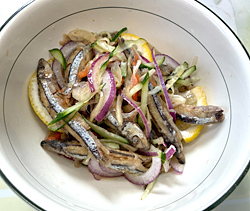

わかさぎの南蛮漬け
- 調理時間： 30分
- （一人当たり）
- カロリー：361kcal
- たんぱく質：12.6g
- 脂質：14.0g
- 炭水化物：44.3g
- 塩分：1.5g


＜2人分＞
- わかさぎ
- 15～20尾
- 片栗粉
- 適量
- 揚げ油
- 適量
- ・紫玉ねぎ
（皮をむいて薄切り） - 1/2個
- ・カラーピーマン
（種をとって薄切り） - 1/2個
- ・キュウリ（なます切り）
- 1/2本
- ・レモン（イチョウ切り）
- 1/3個
A
- ・穀物酢
- 120ml
- ・砂糖
- 50g
- ・だし汁
- 40ml
- ・食塩
- 少々
- ・赤唐辛子
- お好みで
- ・醤油
- 大さじ1
B


- Aの野菜とレモンを下準備しておく。（切り方を参考に切っておく）
- わかさぎは塩水でよく洗い、キッチンペーパで水気を拭いておく。
- 小鍋にBの材料を合わせ、火にかけて、砂糖をしっかり溶かしておく。
- ②のわかさぎに片栗粉をまぶし、熱した油でからりと揚げる。
- 揚げたわかさぎと①の野菜を③のタレにくぐらせる。
- 器に盛り付け、残りのタレをたっぷり盛り付けて完成。
※冷蔵庫で冷やしてもおいしくいただけます
わかさぎの南蛮漬け
わかさぎの「わか」は若い、「さぎ」は小魚、を意味し、漢字では「若細魚」と書くことがあります。ウロコもほとんどなく、骨もやわらかいので丸ごと調理できるのが特徴です。頭から全部食べられるため、カルシウム補給にも理想的。そのほか、貧血によいとされる鉄分やビタミンB12の含有量が高いなど、うれしいことずくめの魚です。